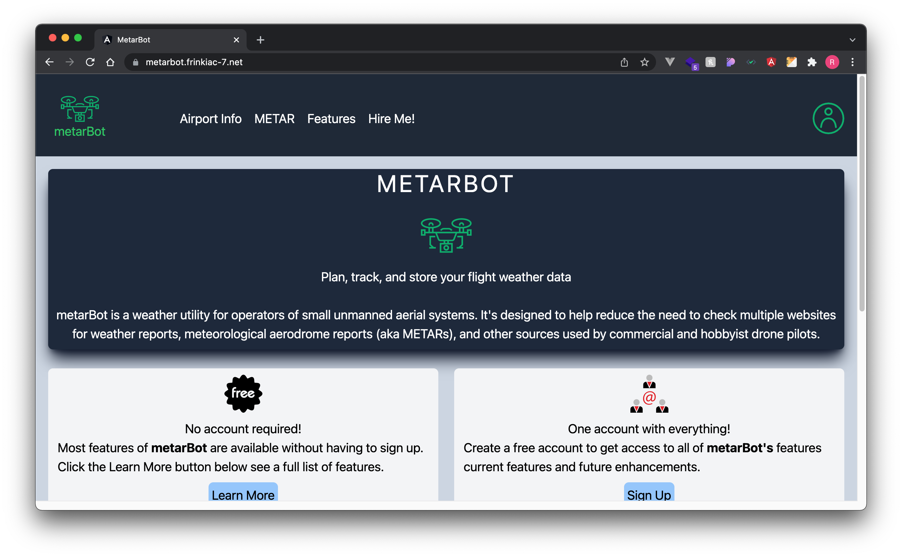
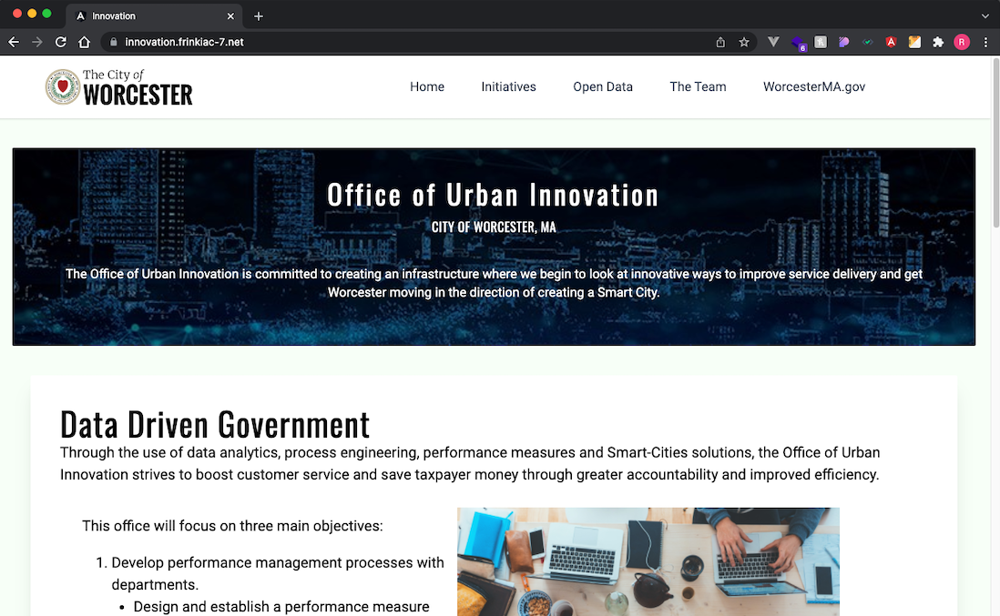

Full-stack web developer with extensive IT experience
I graduated from General Assembly's Web Development Immersive program in April, 2018. The transition to web development is an exciting next stage of my career journey. Previously, I've worked in the IT departments of Harvard University's Extension School, and Bain & Co. Most recently, I was a senior network engineer at Genzyme Corporation and infrastructure project manager at Sanofi Corporation.
As a full stack web developer, I will bring this collection of technical and business skills acquired over the course of my lifelong IT career.
The decision to leave an established career was a difficult one. The shift to project management was a wonderful opportunity to balance my data networking expertise with business skills. It was a rewarding period and one that enabled me to develop valuable new skills.
However, I missed the satisfaction of working working on technical challenges and the exhiliration of learning new platforms. The decision to switch was ultimately the right one. More importantly, I look forward to bringing all of my talents to bear as a web developer.
Portfolio & Current Projects

metarBot
metarBot is an Angular SPA designed to ease the flight planning requirements for drone operations related to weather and visibility. Future enhancements will include the ability to store METAR and TAF reports. Details and source files available at metarBot on GitHub.

Office of Urban Innovation
This site was developed as a A proof of concept intended to serve as a reimagining of the Office of Urban Innovation's presence on the City's official website. Details and source files available at Innovation on GitHub.

KaizenRMS
KaizenRMS is a restaurant menu management system designed for small to medium sized businesses. The platform will expand to include restaurant reservation and delivery area mapping capabilities using 3rd party APIs. Details and source files available at GitHub.
T3 - The Frinkiac-7 Game of Tic-Tac-Toe
My first project at GA and a humorous homage to my favorite Simpson's character. This project opened my eyes to the realities of being a developer. I revisited it after the project was over and improved the game board. Details and source files available at GitHub.

Clique
Clique is a full stack geolocation-based file sharing site built as a team project with two other class colleagues. After weeks of independent work it was exhilirating to be collaborating with other talented students, learning their workflows, and exploring different approaches to problems. Details and source files available at GitHub.
Robcoin
As my first ever full-stack project, Robcoin was (to that point) the hardest app I'd ever built. I had envisioned so much more for it during the design stage. Part of me wants to revisit and improve it. Another part of me wants to leave it a as a reminder of how far I've come. Details and source files available at GitHub.